Made-to-measure garments built for one body at a time, with a specialty in corsets and structured jackets — drafted, draped, cut and sewn from first pattern to final stitch.
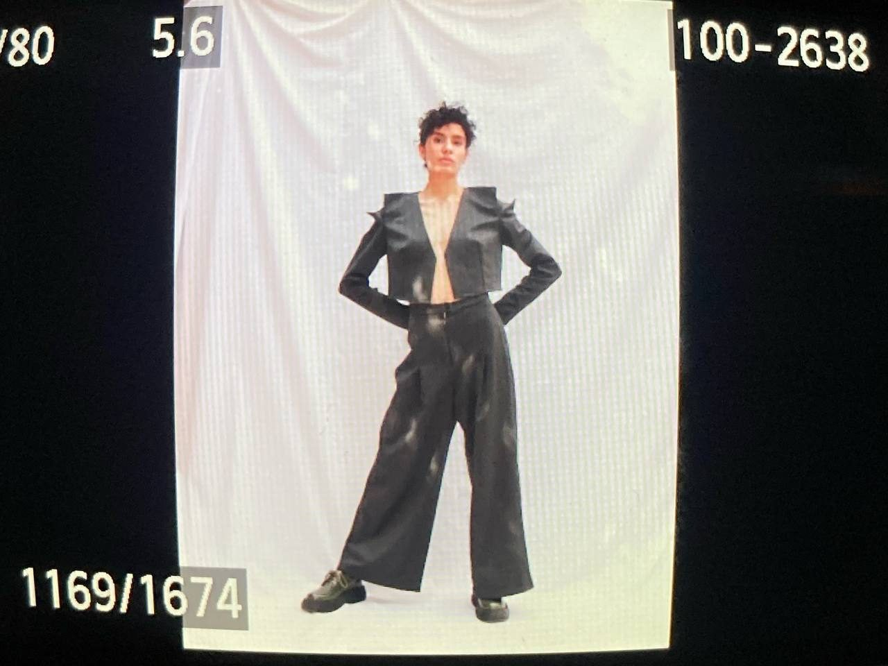
Model in a structured grey jacket with sculpted shoulders and wide trousersBack view of a tailored grey jacket with angular shoulder seams
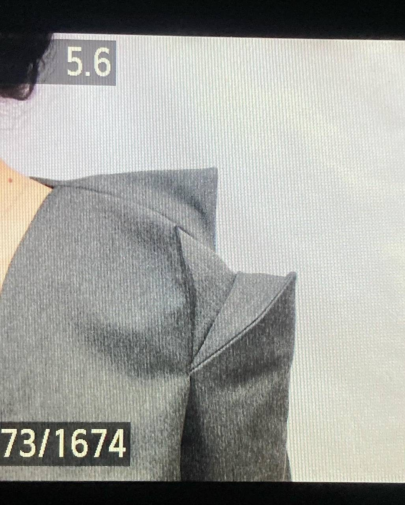
Close-up of the folded shoulder construction of a grey jacket
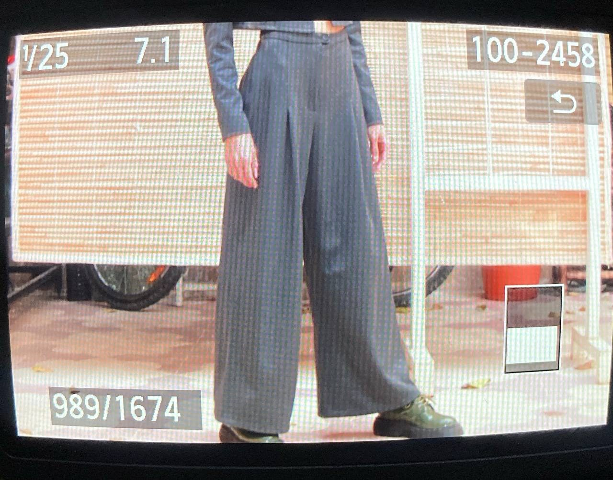
Wide-leg grey trousers worn in front of a workshop window
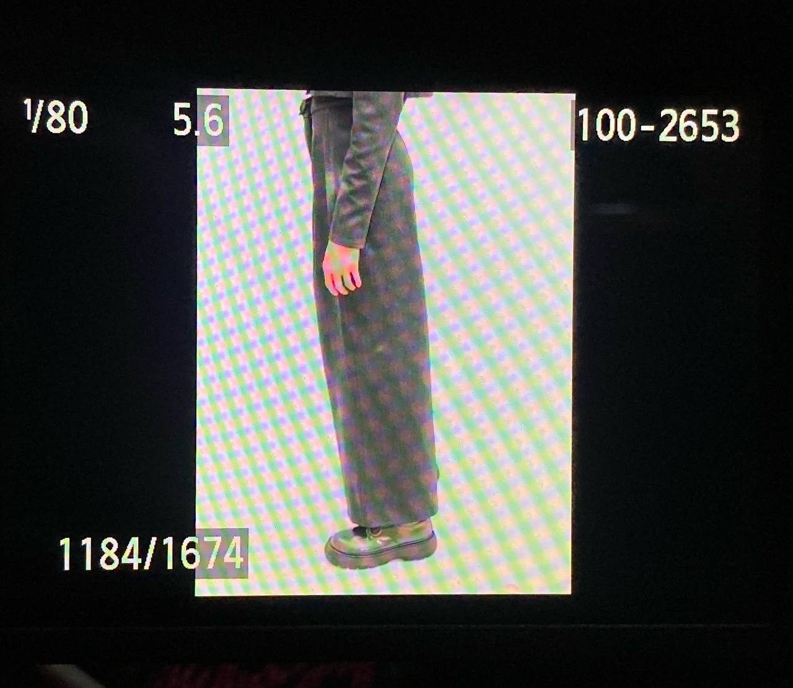
Side view of pleated wide-leg trousers
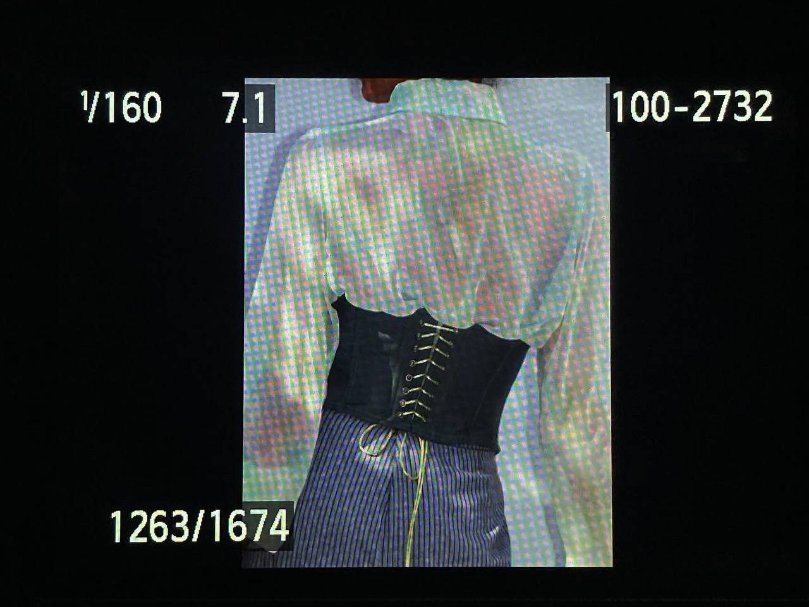
Black laced corset worn over a sheer iridescent blouse
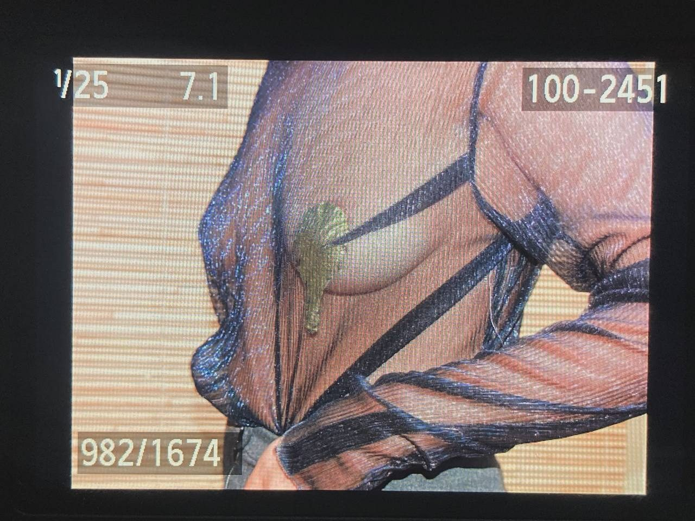
Detail of a sheer mesh top with delicate applique
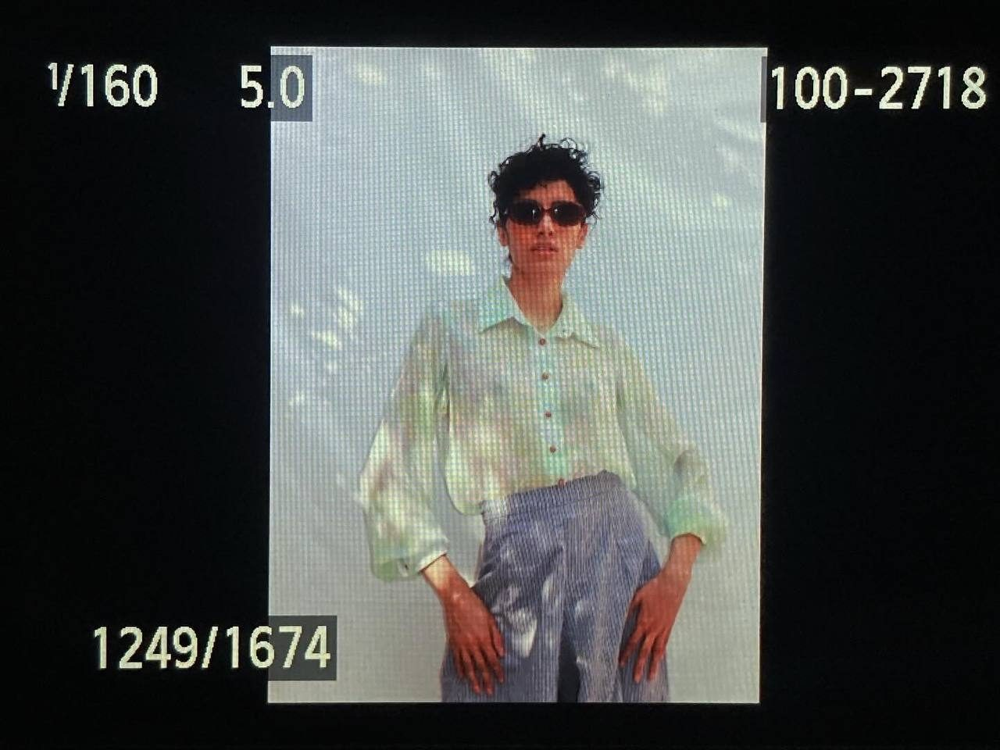
Model in an iridescent shirt and lavender trousers
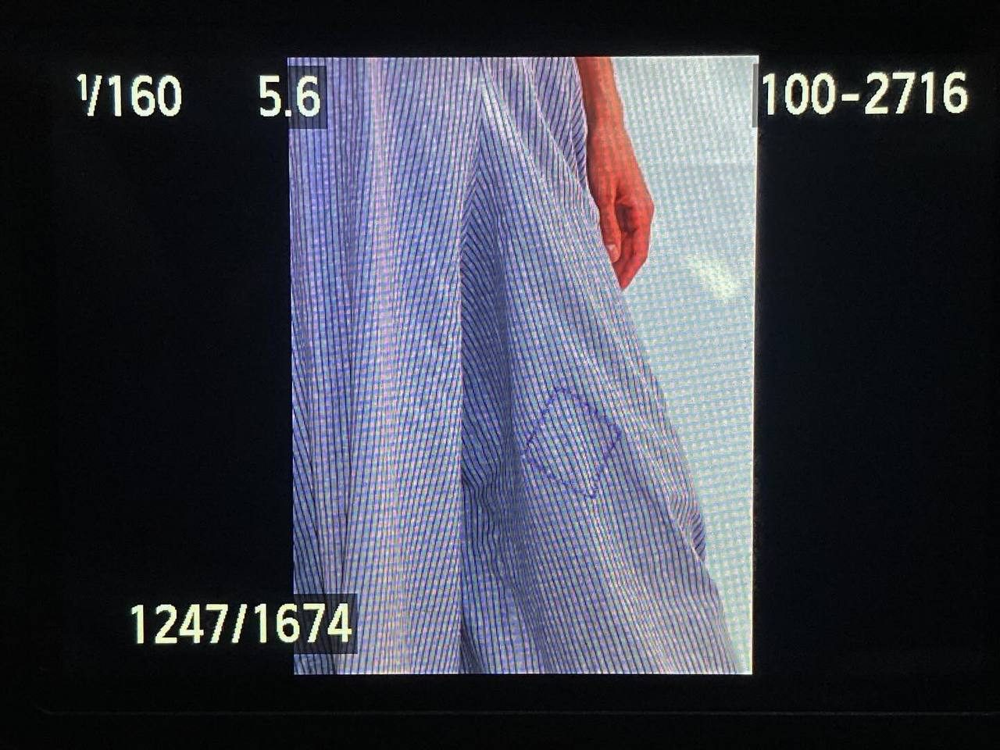
Flowing blue skirt in motion
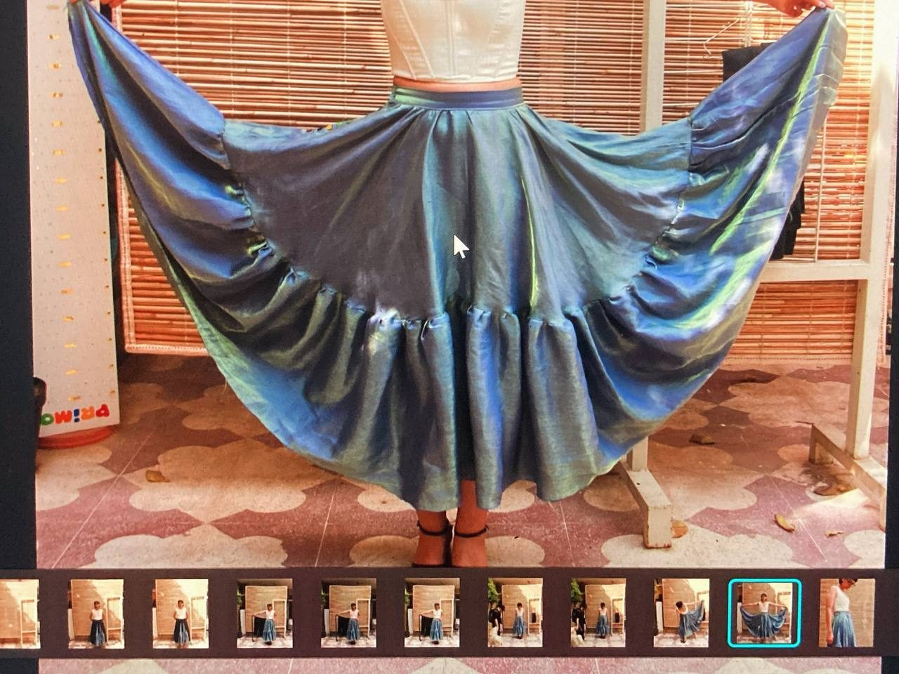
Blue iridescent circle skirt spread out to show its full width
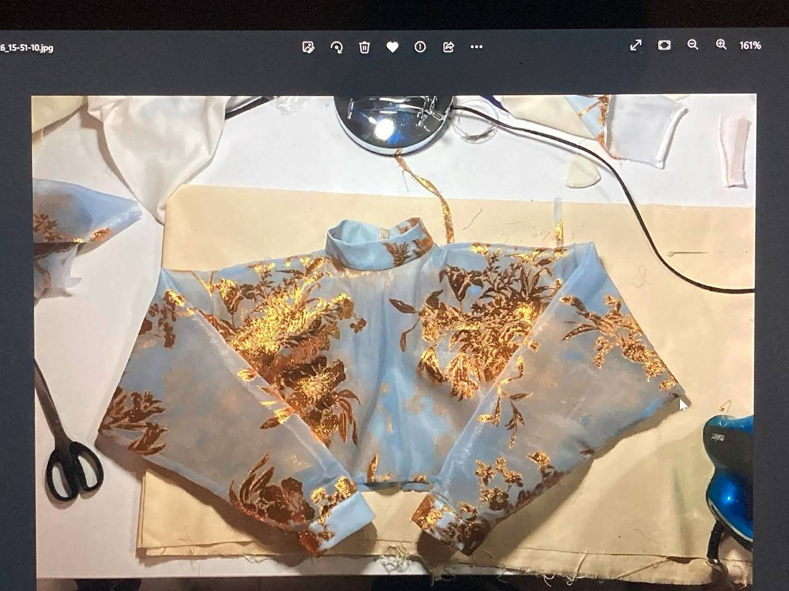
Printed bodice piece in progress on the worktable
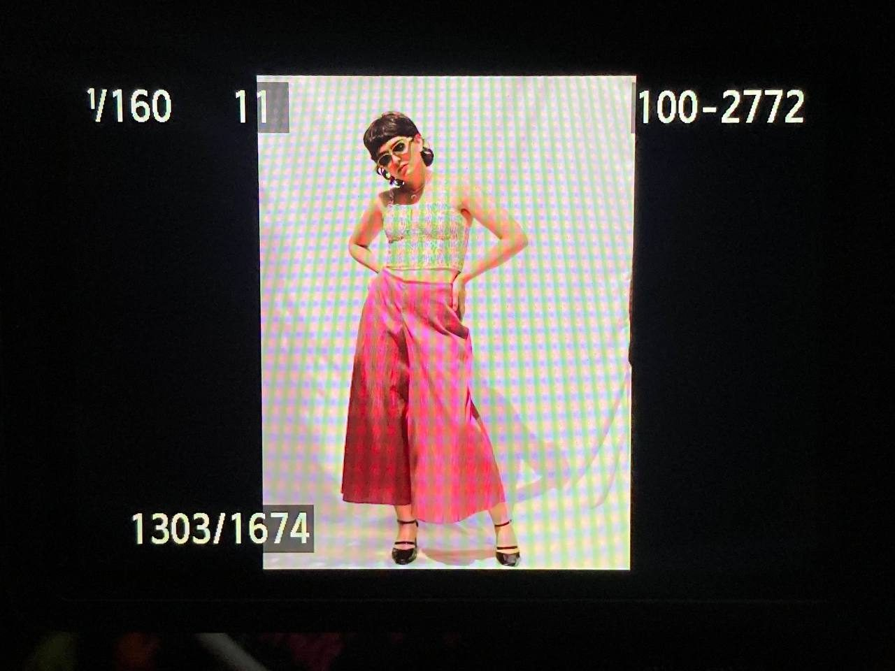
Model in a pale top and wide pink trousers
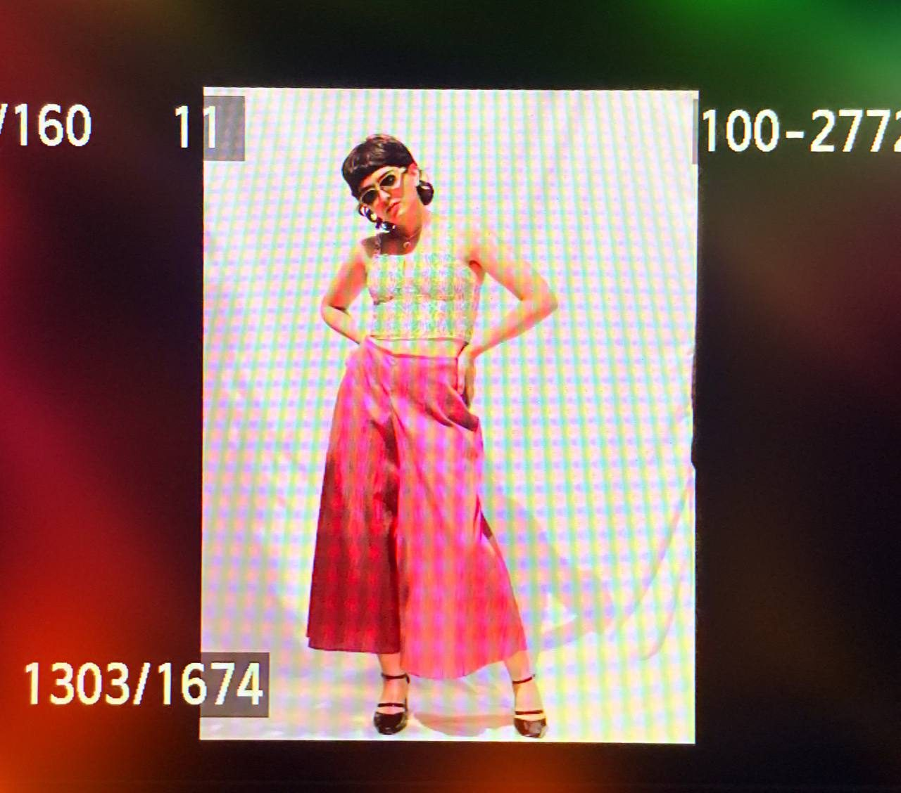
Model posing in the pink look with sunglasses
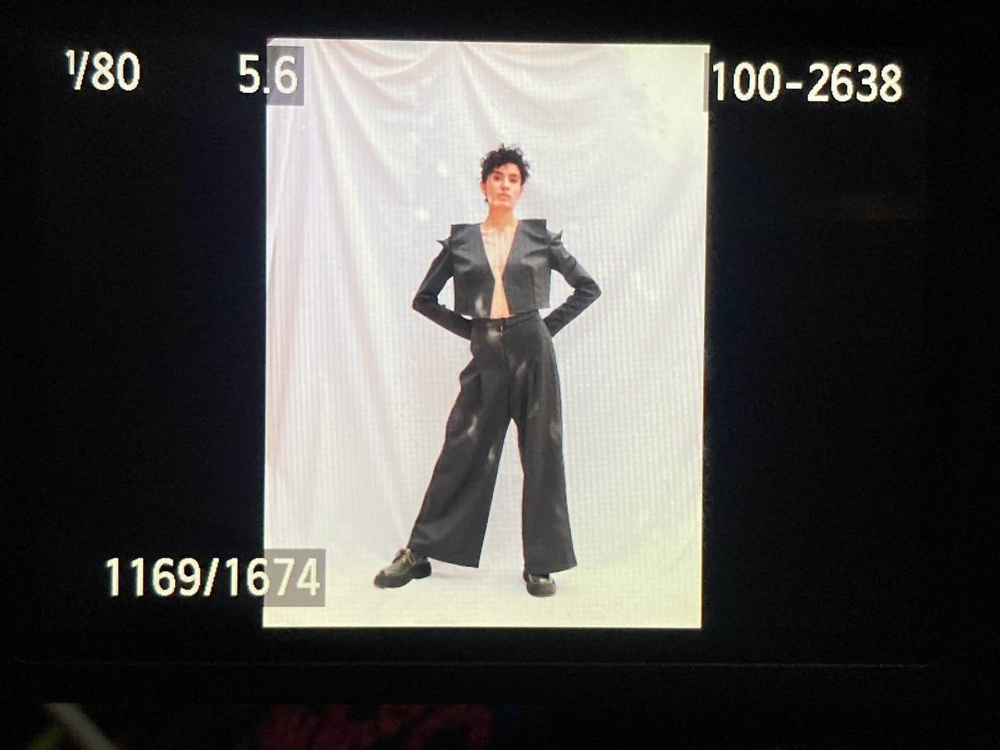
Full look with the grey tailored jacket and wide trousers